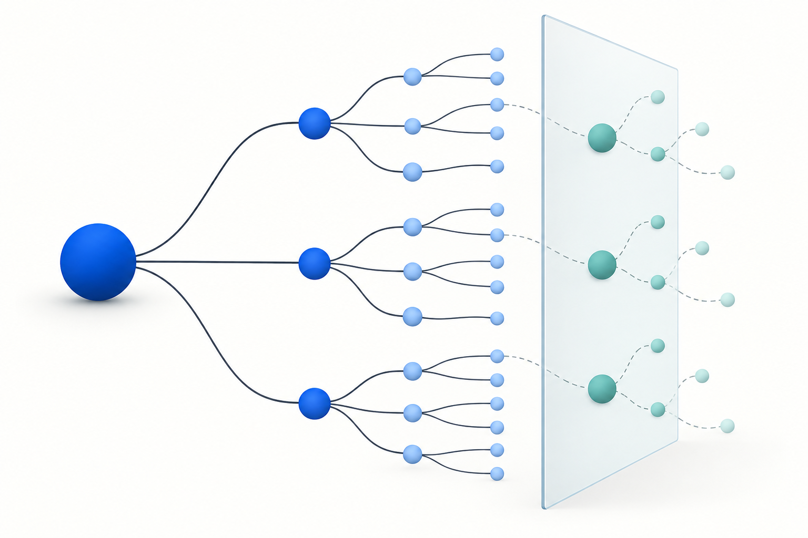

Analytical reliability
Verification First
A compact contract for checking assumptions, alternatives, calculations, and uncertainty before answering.
Explore prompt
A small library for consequential questions
Three ready-to-use prompts help check a conclusion, find the questions you missed, and gather context before investigating. Each has an example, clear limits, and a reproducible evaluation.
Choose by the failure mode
Analytical reliability
A compact contract for checking assumptions, alternatives, calculations, and uncertainty before answering.
Explore promptAnticipatory research
Turn one question into a bounded tree of prerequisites, likely follow-ups, expert blind spots, and competing explanations.
Explore prompt
Two-round investigation
First ask the few consequential questions; after the user's reply, investigate with the same verification discipline.
Explore prompt
What gets measured
The evaluation compares task checkpoints, useful question expansion, clarification quality, errors, and cost. Reported reasoning tokens describe resource use, not answer quality.
Read the protocol and results ↗